🍷 葡萄园：典藏版
Vinhos: Deluxe Edition · 设计：Vital Lacerda · Eagle-Gryphon Games 出版 · 1–6 人 · 官方英文规则书全文翻译（16 页 · AI 辅助机翻）
本页收录《葡萄园：典藏版》（Vinhos: Deluxe Edition, 2016）的原版官方规则书全部 16 页（底本：Eagle-Gryphon Games 官方（boardgamehelpers.com 官方文件站），VDE_SV2016_2016-01-25_VL_LOW.pdf），逐页随图排列，点击任意图片即可放大查看；每页下方默认折叠了该页的 AI 辅助中文机翻对照，需要时可展开。规则内容归 Eagle-Gryphon Games 及版权方所有，收录仅供个人学习查阅。
整理说明：机翻对照按本站术语口径对齐（牌库/手牌/回合/轮/板块/指示物等），PDF 图文混排页的语序可能与原书视觉顺序略有出入；规则细节请一律以页面上方原书页面为准。
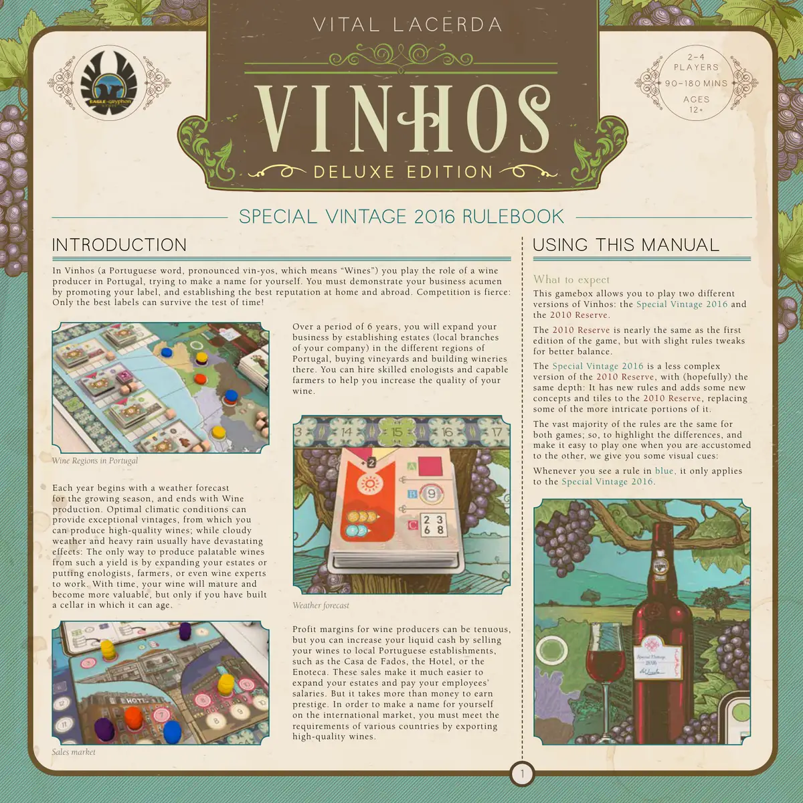
📝 第 1 页 AI 机翻对照（点击展开）
2 - 4
玩家数量
90 - 180 分钟
适合年龄
12 岁以上
引言
在《Vinhos》（一个葡萄牙语单词，发音为 vin-yos，意为"葡萄酒"）中，你将扮演一名葡萄牙的葡萄酒生产商，努力为自己树立名声。你必须通过推广你的品牌，并在国内外建立最佳声誉来展示你的商业才能。竞争十分激烈：只有最好的品牌才能经受住时间的考验！
在为期 6 年的时间里，你将通过在葡萄牙不同地区建立庄园（你公司的本地分支机构）、购买葡萄园并在那里建造酒厂来扩展你的业务。你可以雇佣熟练的酿酒师和能干的农民来帮助你提高葡萄酒的质量。
每年开始时会有生长季的天气预报，并以葡萄酒生产结束。最佳的气候条件可以产出卓越的年份，从中你可以生产出高质量的葡萄酒；而阴雨天气和暴雨通常会产生毁灭性的影响：要从这样的收成中生产出可口的葡萄酒，唯一的方法是扩展你的庄园或让酿酒师、农民，甚至是葡萄酒专家投入工作。随着时间的推移，你的葡萄酒会陈酿变得更加珍贵，但前提是你必须建造一个地窖来存放它。
葡萄酒生产商的利润可能很微薄，但你可以通过将葡萄酒出售给葡萄牙当地的机构（如法朵之家、酒店或葡萄酒专卖店）来增加你的现金储备。这些销售使扩展庄园和支付员工工资变得容易得多。但要获得声誉，光有钱是不够的。为了在国际市场上树立名声，你必须通过出口高质量的葡萄酒来满足各国的需求。
使用本手册
内容预览
这个游戏盒让你可以玩《Vinhos》的两个不同版本：2016 特别年份版和 2010 珍藏版。
2010 珍藏版与游戏第一版几乎相同，但有一些微小的规则调整以获得更好的平衡性。
2016 特别年份版是 2010 珍藏版的简化版本，但（希望）具有相同的深度：它有新规则，并在 2010 珍藏版的基础上添加了一些新概念和板块，替换了其中较为复杂的部分。
两个游戏的绝大多数规则是相同的；因此，为了突出差异，并使你在熟悉一个版本后能轻松地玩另一个版本，我们提供了一些视觉提示：
每当看到蓝色规则时，它仅适用于 2016 特别年份版。
VITAL LACERDA
2016 特别年份版规则书
葡萄牙葡萄酒产区
天气预报
销售市场
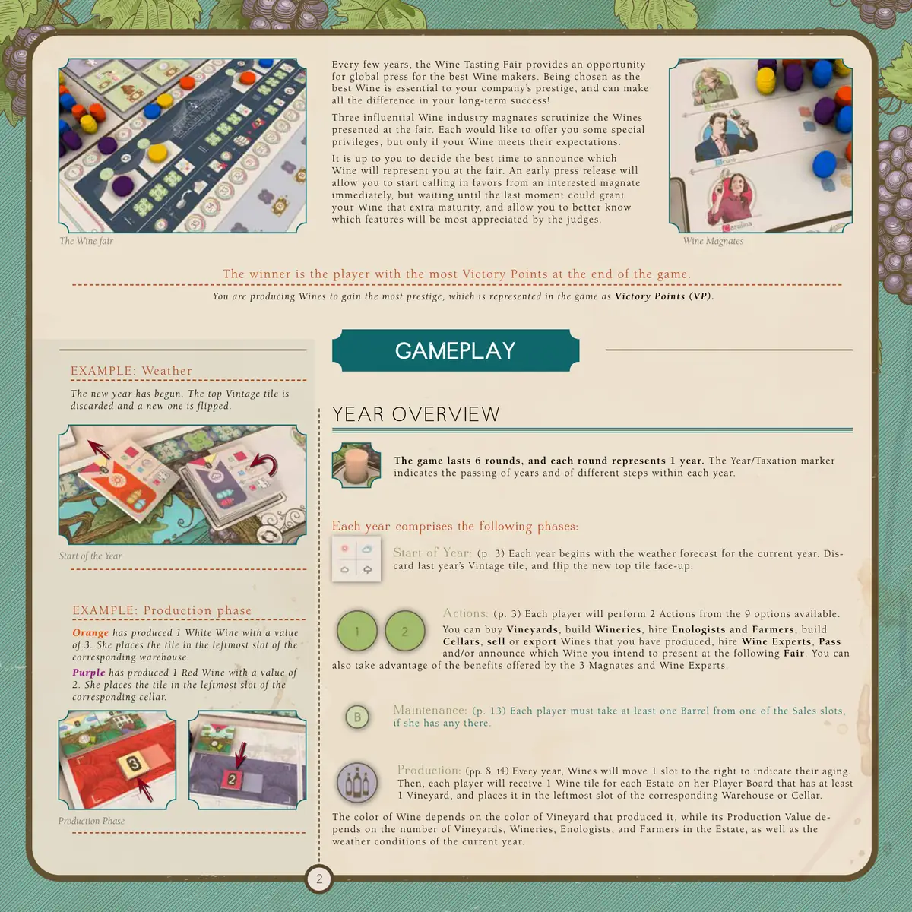
📝 第 2 页 AI 机翻对照（点击展开）
年度概览
游戏持续6轮，每轮代表1年。年份/税收标记指示年份的流逝和每年内的不同步骤。
每年包含以下阶段：
年初：(第3页) 每年开始时进行当年天气预报。丢弃去年的年份板块，并将新的顶部板块翻至正面朝上。
行动：(第3页) 每位玩家将从9个可用选项中执行2个行动。你可以购买葡萄园、建造酒厂、雇佣酿酒师和农民、建造酒窖、出售或出口你生产的葡萄酒、雇佣葡萄酒专家、跳过和/或宣布你打算在下一届展会上展示的葡萄酒。你也可以利用3位大亨和葡萄酒专家提供的好处。
维护：(第13页) 如果玩家在销售槽中有任何葡萄酒，每位玩家必须从其中一个销售槽中至少取走一桶酒。
生产：(第8、14页) 每年，葡萄酒将向右移动1个槽位以表示其陈酿。然后，每位玩家将为其玩家版图上每个拥有至少1个葡萄园的庄园获得1个葡萄酒板块，并将其放置在相应仓库或酒窖的最左侧槽位。葡萄酒的颜色取决于生产它的葡萄园的颜色，而其生产价值则取决于庄园中的葡萄园、酒厂、酿酒师和农民的数量，以及当年的天气条件。
示例：天气
新的一年已经开始。顶部的年份板块被丢弃，新的年份板块被翻开。
示例：生产阶段
橙色玩家生产了1个价值为3的白葡萄酒。她将板块放置在相应仓库的最左侧槽位。
紫色玩家生产了1个价值为2的红葡萄酒。她将板块放置在相应酒窖的最左侧槽位。
葡萄酒展会
葡萄酒大亨
年初
生产阶段
每隔几年，葡萄酒品鉴展会都会为最佳酿酒师提供全球宣传的机会。被选为最佳葡萄酒对公司的声誉至关重要，并可能对你长期的成败产生决定性影响！
三位有影响力的葡萄酒行业大亨将仔细审查展会上展示的葡萄酒。每个人都愿意为你提供一些特殊特权，但前提是你的葡萄酒符合他们的期望。
由你决定宣布哪款葡萄酒将在展会上代表你的最佳时机。提前发布新闻稿可以让你立即开始向感兴趣的大亨寻求帮助，但等到最后一刻可能会让你的葡萄酒获得额外的陈酿时间，并让你更好地了解评委最欣赏哪些特点。
游戏结束时，拥有最多胜利点的玩家获胜。
您正在生产葡萄酒以获得最多的声望，这在游戏中以胜利点(VP)表示。
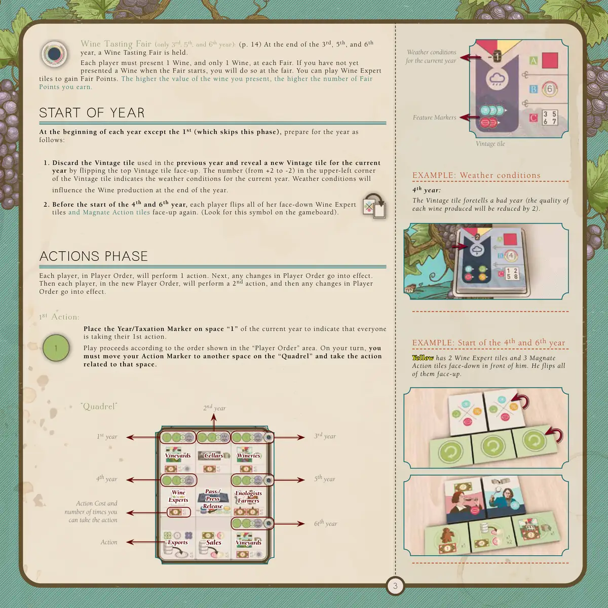
📝 第 3 页 AI 机翻对照（点击展开）
品酒会（仅在第3、5和6年）：（第14页）在第3、5和6年结束时，会举办品酒会。
每位玩家必须在每次品酒会上展示1款葡萄酒，且仅展示1款。如果品酒会开始时你尚未展示葡萄酒，你将在品酒会上进行展示。你可以使用品酒专家板块来获得品酒会积分。你所展示的葡萄酒价值越高，你获得的品酒会积分就越多。
年开始
除第1年（跳过此阶段）外，每年年初按如下方式准备年份：
- 弃置上一年使用的年份板块，通过将顶部的年份板块翻面来为当前年份揭示一个新的年份板块。年份板块左上角的数字（从+2到-2）表示当前年份的天气条件。天气条件将影响年底的葡萄酒生产。
- 在第4年和第6年开始前，每位玩家将其所有面朝下的品酒专家板块和巨头行动板块再次翻面。（在游戏版图上寻找此符号）。
行动阶段
每位玩家按玩家顺序执行1个行动。然后，任何玩家顺序的变化生效。接着，每位玩家按新的玩家顺序执行第2个行动，然后任何玩家顺序的变化再次生效。
第1个行动：
将年份/税收标记放置在当前年份的"1"格上，表示所有人都在执行他们的第1个行动。
游戏按照"玩家顺序"区域所示的顺序进行。轮到你时，你必须将你的行动标记移动到"Quadrel"上的另一个空间，并执行与该空间相关的行动。
示例：天气条件
第4年：
年份板块预示着糟糕的一年（每款生产的葡萄酒质量将降低2点）。
年份板块
当前年份的
天气条件
特征标记
示例：第4年和第6年开始时
黄色玩家面前有2个面朝下的品酒专家板块和3个巨头行动板块。他将它们全部翻面。
"Quadrel"
第1年
第4年
行动成本和
你可以执行该行动的次数
行动
第6年
第3年
第5年
第2年
葡萄园
葡萄园
出口
品酒专家
品酒专家
酒窖
销售
跳过/
发布
酒厂
酿酒师
农民
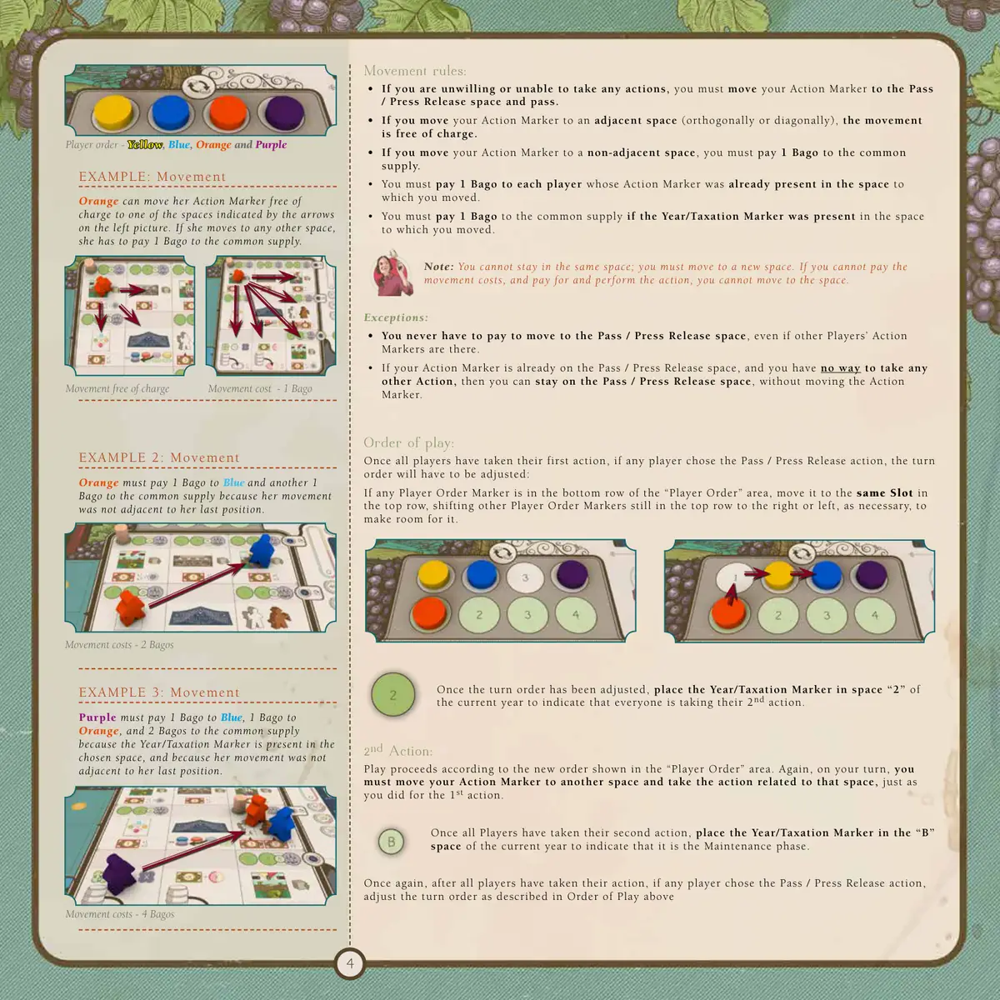
📝 第 4 页 AI 机翻对照（点击展开）
移动规则：
• 如果您不愿意或无法采取任何行动，您必须将您的行动指示物移动到"弃牌/新闻发布"区域并跳过回合。
• 如果您将行动指示物移动到相邻区域（正交或对角线方向），移动是免费的。
• 如果您将行动指示物移动到不相邻的区域，您必须向公共供应区支付1个Bago。
• 您必须向每个行动指示物已存在于您所移动到的区域的玩家支付1个Bago。
• 如果年份/税收指示物存在于您所移动到的区域，您必须向公共供应区支付1个Bago。
注意：您不能停留在同一区域；您必须移动到一个新区域。如果您无法支付移动费用，并支付并执行行动，您不能移动到该区域。
例外：
• 您永远不必为移动到"弃牌/新闻发布"区域而付费，即使其他玩家的行动指示物在那里。
• 如果您的行动指示物已经在"弃牌/新闻发布"区域，并且您没有其他方式可以采取任何行动，那么您可以停留在"弃牌/新闻发布"区域，而不移动行动指示物。
游戏顺序：
一旦所有玩家都采取了他们的第一次行动，如果有玩家选择了"弃牌/新闻发布"行动，回合顺序将需要调整：
如果任何玩家顺序指示物位于"玩家顺序"区域的底部一行，将其移动到顶部一行的相同槽位，将仍然位于顶部一行的其他玩家顺序指示物向右或向左移动，以腾出空间。
一旦回合顺序被调整，将年份/税收指示物放置在当前年份的"2"区域，以表示每个人都在进行他们的第二次行动。
第二次行动：
游戏根据"玩家顺序"区域显示的新顺序进行。同样，在您的回合，您必须将您的行动指示物移动到另一个区域，并采取与该区域相关的行动，就像您第一次行动时一样。
一旦所有玩家都采取了第二次行动，将年份/税收指示物放置在当前年份的"B"区域，表示这是维护阶段。
再次，在所有玩家都采取行动后，如果有玩家选择了"弃牌/新闻发布"行动，如上所述调整回合顺序。
示例：移动
橙色玩家可以免费将她的行动指示物移动到左图箭头指示的任何一个区域。如果她移动到任何其他区域，她必须向公共供应区支付1个Bago。
示例2：移动
橙色玩家必须向蓝色玩家支付1个Bago，并向公共供应区再支付1个Bago，因为她的移动不是相邻的。
示例3：移动
紫色玩家必须向蓝色玩家支付1个Bago，向橙色玩家支付1个Bago，并向公共供应区支付2个Bago，因为年份/税收指示物存在于所选区域，并且因为她的移动不是
在其上一个位置相邻处。
玩家顺序 - 黄色、蓝色、橙色和紫色
免费移动
移动成本 - 1个Bago
移动成本 - 4个Bagos
移动成本 - 2个Bagos
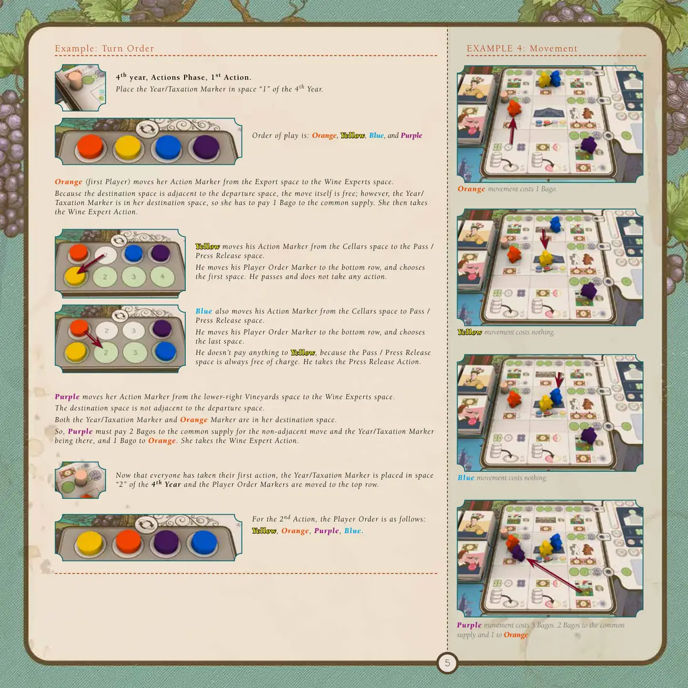
📝 第 5 页 AI 机翻对照（点击展开）
示例：回合顺序
第4年，行动阶段，第1个行动。
将年份/征税指示物放置在第4年的"1"格。
行动顺序为：橙色、黄色、蓝色和紫色
橙色（首位玩家）将其行动指示物从出口格移动到葡萄酒专家格。
由于目标格与起始格相邻，移动本身是免费的；然而，年份/征税指示物在她的目标格中，因此她必须向公共供应区支付1个巴戈。然后她执行葡萄酒专家行动。
黄色将其行动指示物从酒窖格移动到通过/新闻发布格。
他将玩家顺序指示物移动到底部行，并选择第一个格。他跳过并执行任何行动。
蓝色也将其行动指示物从酒窖格移动到通过/新闻发布格。
他将玩家顺序指示物移动到底部行，并选择最后一个格。
他不需要向黄色支付任何费用，因为通过/新闻发布格总是免费的。他执行新闻发布行动。
紫色将其行动指示物从右下角的葡萄园格移动到葡萄酒专家格。
目标格与起始格不相邻。
年份/征税指示物和橙色指示物都在她的目标格中。
因此，紫色必须向公共供应区支付2个巴戈用于不相邻的移动和年份/征税指示物的存在，并向橙色支付1个巴戈。她执行葡萄酒专家行动。
现在所有人都完成了他们的第一个行动，年份/征税指示物被放置在第4年的"2"格，玩家顺序指示物被移动到顶部行。
对于第2个行动，玩家顺序如下：
黄色、橙色、紫色、蓝色。
橙色移动花费1个巴戈。
黄色移动花费无。
紫色移动花费3个巴戈。2个巴戈给公共供应区，1个给橙色
蓝色移动花费无。
示例4：移动
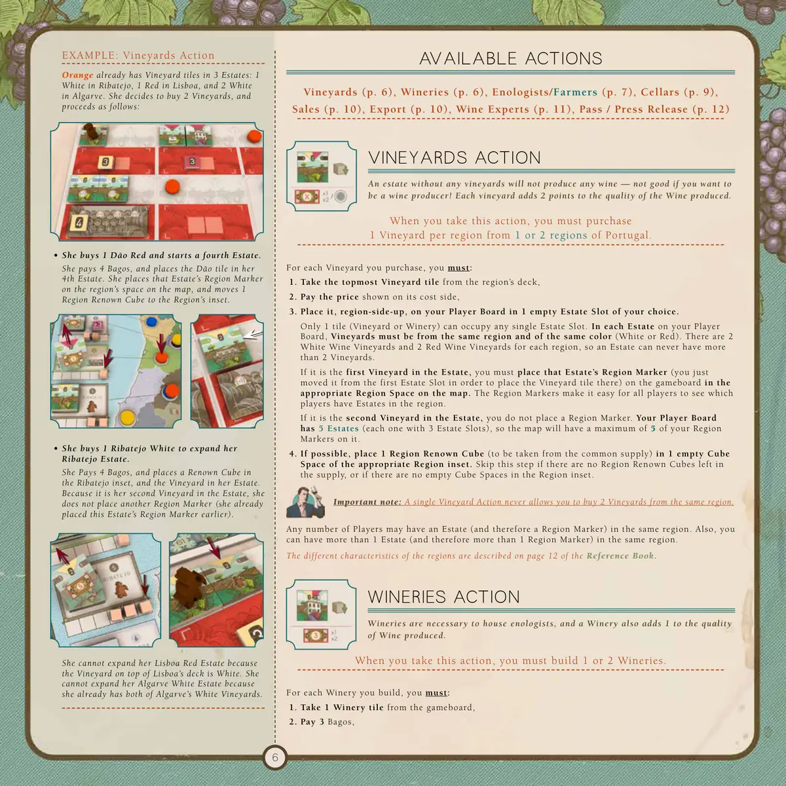
📝 第 6 页 AI 机翻对照（点击展开）
可用行动
葡萄园（第6页）、酒庄（第6页）、酿酒师/农民（第7页）、酒窖（第9页）、
销售（第10页）、出口（第10页）、葡萄酒专家（第11页）、跳过/新闻稿（第12页）
葡萄园行动
任何没有葡萄园的庄园都不会生产任何葡萄酒——如果你想成为葡萄酒生产商，这可不是好事！每个葡萄园会使生产的葡萄酒质量增加2点。
当你执行此行动时，你必须从葡萄牙的1个或2个区域中，每个区域购买1个葡萄园。
对于你购买的每个葡萄园，你必须：
- 从该区域的牌库中拿取最顶端的葡萄园板块，
2. 支付其成本面显示的价格，
- 将其区域面朝上放置在你的玩家版图上你选择的任意一个空庄园槽位中。
任意单个庄园槽位只能放置1个板块（葡萄园或酒庄）。在你的玩家版图上的每个庄园中，葡萄园必须来自同一区域且为同一颜色（白葡萄酒或红葡萄酒）。每个区域有2个白葡萄酒葡萄园和2个红葡萄酒葡萄园，因此一个庄园最多不能有超过2个葡萄园。
如果这是庄园中的第一个葡萄园，你必须将该庄园的区域标记（你刚刚将其从第一个庄园槽位移开以便在此放置葡萄园板块）放置在版图上地图上相应的区域空间中。区域标记使所有玩家能够轻松看到哪些玩家在该区域拥有庄园。
如果这是庄园中的第二个葡萄园，你不要放置区域标记。你的玩家版图有5个庄园（每个庄园有3个庄园槽位），因此地图上最多会有5个你的区域标记。
- 如果可能，将1个区域声望立方体（从公共供应中获取）放置在相应区域插图中的1个空立方体空间中。如果供应中没有剩余的区域声望立方体，或者该区域插图中没有空的立方体空间，则跳过此步骤。
重要提示：单次葡萄园行动不允许你从同一区域购买2个葡萄园。任意数量的玩家可以在同一区域拥有庄园（因此也有区域标记）。此外，你可以在同一区域拥有超过1个庄园（因此也有超过1个区域标记）。
不同区域的特性在参考手册的第12页有描述。
酒庄行动
酒庄是存放酿酒师的必要场所，并且酒庄也会使生产的葡萄酒质量增加1点。
当你执行此行动时，你必须建造1个或2个酒庄。
对于你建造的每个酒庄，你必须：
- 从版图上拿取1个酒庄板块，
- 支付3个Bagos，
示例：葡萄园行动
Orange已经在3个庄园中拥有葡萄园板块：1个在Ribatejo的白葡萄酒，1个在Lisboa的红葡萄酒，以及2个在Algarve的白葡萄酒。她决定购买2个葡萄园，并按以下步骤进行：
• 她购买了1个Dão红葡萄酒并开始第四个庄园。她支付了4个Bagos，并将Dão板块放置在她的
• 她购买1张里巴特茹白葡萄酒(Ribatejo White)来扩展她的里巴特茹庄园(4th Estate)。她支付4个Bagos，在里巴特茹的插图区域放置一个声望指示物，并将葡萄园(Vineyard)放置在她的庄园中。因为这是她在该庄园中的第二个葡萄园，所以她不再放置另一个区域标记(她之前已经放置了这个庄园的区域标记)。她无法扩展她的里斯本红葡萄酒(Lisboa Red)庄园，因为里斯本牌库顶部的葡萄园是白色的。她无法扩展她的阿尔加维白葡萄酒(Algarve White)庄园，因为她已经拥有阿尔加维的两张白葡萄酒葡萄园。
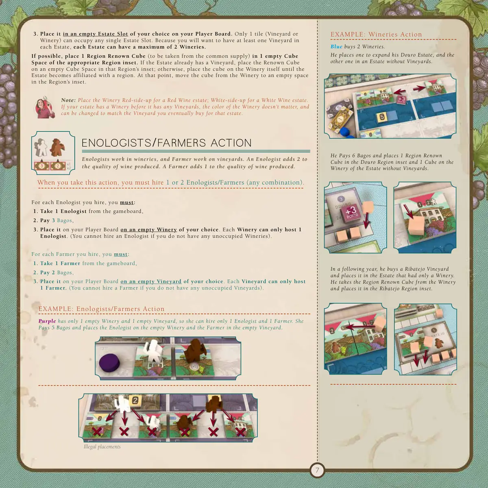
📝 第 7 页 AI 机翻对照（点击展开）
- 将其放置在你的玩家版图上你选择的任意一个空庄园槽位中。每个庄园槽位只能放置1个板块（葡萄园或酒庄）。因为你希望每个庄园至少有一个葡萄园，所以每个庄园最多可以有2个酒庄。
如果可能，将1个地区声望立方体（从公共供应区中获取）放置在相应地区内嵌的1个空立方体格位中。如果该庄园已有葡萄园，则将声望立方体放置在该地区的内嵌区域中的空立方体格位上；否则，将立方体放置在酒庄本身，直到该庄园与某个地区关联。届时，将立方体从酒庄移动到该地区内嵌区域中的空格位上。
注意：红酒庄园的酒庄放置红色面朝上；白酒庄园的酒庄放置白色面朝上。
如果你的庄园在拥有任何葡萄园之前就有一个酒庄，那么酒庄的颜色无关紧要，可以更改为与你最终为该庄园购买的葡萄园相匹配的颜色。
酿酒师/农民行动
酿酒师在酒庄工作，农民在葡萄园工作。酿酒师使生产的葡萄酒质量增加2。农民使生产的葡萄酒质量增加1。
当你执行此行动时，你必须雇佣1或2名酿酒师/农民（任意组合）。
对于你雇佣的每名酿酒师，你必须：
- 从游戏版图上取1个酿酒师，
- 支付3个Bagos，
- 将其放置在你的玩家版图上你选择的任意一个空酒庄中。每个酒庄只能容纳1名酿酒师。（如果你没有未被占用的酒庄，则不能雇佣酿酒师）。
对于你雇佣的每名农民，你必须：
- 从游戏版图上取1个农民，
- 支付2个Bagos，
- 将其放置在你的玩家版图上你选择的任意一个空葡萄园中。每个葡萄园只能容纳1名农民。（如果你没有未被占用的葡萄园，则不能雇佣农民）。
示例：酿酒师/农民行动
紫色只有1个空酒庄和1个空葡萄园，所以她只能雇佣1名酿酒师和1名农民。她支付5个Bagos，将酿酒师放置在空酒庄中，将农民放置在空葡萄园中。
示例：酒庄行动
蓝色购买了2个酒庄。
他将一个用于扩展他的杜罗庄园，另一个放置在没有葡萄园的庄园中。
他支付6个Bagos，并将1个地区声望立方体放置在杜罗地区内嵌区域，1个立方体放置在没有葡萄园的庄园的酒庄上。
在接下来的年份，他购买了一个里巴特茹葡萄园，并将其放置在只有酒庄的庄园中。
他从酒庄取走地区声望立方体，并将其放置在里巴特茹地区内嵌区域。
非法放置
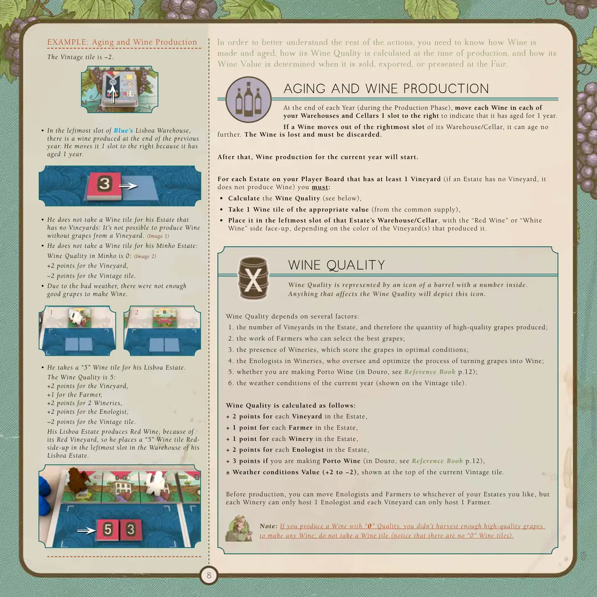
📝 第 8 页 AI 机翻对照（点击展开）
为了更好地理解其余的行动，你需要了解葡萄酒是如何酿造和陈年的，其葡萄酒品质是如何在生产时计算的，以及其葡萄酒价值是如何在出售、出口或在集市上展示时确定的。
陈年与葡萄酒生产
每年年底（在生产阶段期间），将你每个仓库和酒窖中的每瓶葡萄酒向右移动1个槽位，表示它已经陈年1年。
如果葡萄酒移出了其仓库/酒窖的最右侧槽位，它就无法继续陈年。这瓶葡萄酒将丢失，必须被弃置。
之后，当年的葡萄酒生产将开始。
对于你玩家版图上每个至少拥有1个葡萄园的庄园（如果庄园没有葡萄园，则不生产葡萄酒），你必须：
• 计算葡萄酒品质（见下文），
• 从公共供应区中拿取1张相应价值的葡萄酒板块，
• 将其放置在该庄园的仓库/酒窖的最左侧槽位，并根据生产它的葡萄园的颜色，将"红葡萄酒"或"白葡萄酒"面朝上放置。
葡萄酒品质
葡萄酒品质由一个带有数字的桶图标表示。
任何影响葡萄酒品质的内容都会显示此图标。
葡萄酒品质取决于几个因素：
- 庄园中的葡萄园数量，因此生产的高品质葡萄数量；
- 农民的工作，他们可以选择最好的葡萄；
- 酒庄的存在，它们以最佳条件储存葡萄；
- 酒庄中的酿酒师，他们监督和优化将葡萄转化为葡萄酒的过程；
- 你是否正在生产波特酒（在杜罗，见参考手册第12页）；
- 当年的天气状况（显示在年份板块上）。
葡萄酒品质计算如下：
+ 庄园中每个葡萄园2分，
+ 庄园中每个农民1分，
+ 庄园中每个酒庄1分，
+ 庄园中每个酿酒师2分，
+ 如果你正在生产波特酒（在杜罗，见参考手册第12页）则加3分，
± 天气状况值（+2到-2），显示在当前年份板块的顶部。
在生产前，你可以将酿酒师和农民移动到你喜欢的任何庄园，但每个酒庄只能容纳1个酿酒师，每个葡萄园只能容纳1个农民。
注意：如果你生产品质为"0"的葡萄酒，意味着你没有收获足够的高品质葡萄来酿造任何葡萄酒；不要拿取葡萄酒板块（注意没有"0"品质的葡萄酒板块）。
示例：陈年和葡萄酒生产
年份板块是-2。
• 在里斯本仓库的最左侧槽位中，蓝玩家有一瓶去年年底生产的葡萄酒。他将它向右移动1个槽位，因为它已经陈年1年。
• 他没有为没有葡萄园的庄园拿取葡萄酒板块：不可能生产葡萄酒
来自葡萄园的葡萄。(图1)
• 他没有为他的米尼奥庄园拿取一块葡萄酒板块：
米尼奥的葡萄酒质量为0：(图2)
+2分来自葡萄园，
-2分来自陈年板块。
• 由于恶劣天气，没有足够的优质葡萄来酿造葡萄酒。
• 他为他的里斯本庄园拿取一块"5"葡萄酒板块。
葡萄酒质量为5：
+2分来自葡萄园，
+1分来自农夫，
+2分来自2个酿酒厂，
+2分来自葡萄酒专家，
-2分来自陈年板块。
他的里斯本庄园生产红葡萄酒，因为它的红葡萄园，所以他将一块"5"葡萄酒板块红色面朝上放置在他的里斯本庄园仓库的最左边槽位中。
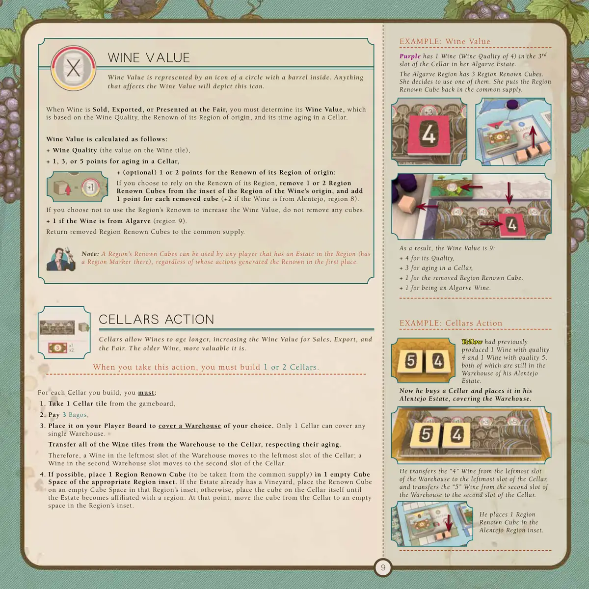
📝 第 9 页 AI 机翻对照（点击展开）
示例：葡萄酒价值
紫色玩家在她的阿尔加维庄园的地窖第三格中有1瓶葡萄酒（品质为4）。
阿尔加维地区有3个地区声望立方体。
她决定使用其中一个。她将地区声望立方体放回公共供应区。
结果是，葡萄酒价值为9点：
+ 4点来自其品质，
+ 3点来自在地窖中陈酿，
+ 1点来自移除的地区声望立方体。
+ 1点来自阿尔加维葡萄酒。
示例：地窖行动
黄色玩家之前生产了1瓶品质为4的葡萄酒和1瓶品质为5的葡萄酒，
这两瓶酒仍然在他的阿连茹庄园的仓库中。
现在他购买了一个地窖，并将其放置在他的阿连茹庄园中，覆盖了仓库。
他将"4"号葡萄酒从仓库的最左边格子转移到地窖的最左边格子，
并将"5"号葡萄酒从仓库的第二格转移到地窖的第二格。
他在阿连茹地区插图上放置了1个地区声望立方体。
葡萄酒价值
葡萄酒价值用一个带有桶形图案的圆形图标表示。任何影响葡萄酒价值的内容都会显示此图标。
当葡萄酒被出售、出口或在集市上展示时，你必须确定其葡萄酒价值，该价值基于葡萄酒品质、其原产地区的声望以及在酒窖中陈酿的时间。
葡萄酒价值计算如下：
+ 葡萄酒品质（葡萄酒板块上的数值），
+ 1、3或5点用于在酒窖中陈酿，
+（可选）1或2点来自其原产地区的声望：
如果你选择依靠地区的声望来提高葡萄酒价值，从葡萄酒原产地地区的插图中移除1或2个地区声望立方体，并为每个移除的立方体加1点（如果葡萄酒来自阿连茹地区8，则加2点）。
如果你选择不使用地区的声望来提高葡萄酒价值，请不要移除任何立方体。
+ 1点如果葡萄酒来自阿尔加维（地区9）。
将移除的地区声望立方体归还到公共供应区。
注意：一个地区的声望立方体可以被任何在该地区拥有庄园（在该地区有地区标记）的玩家使用，无论最初是谁的行动产生了这些声望。
地窖行动
地窖允许葡萄酒更长时间地陈酿，从而提高出售、出口和在集市上的葡萄酒价值。葡萄酒越陈年，价值越高。
当你执行此行动时，你必须建造1个或2个地窖。
对于你建造的每个地窖，你必须：
- 从游戏版图上取1个地窖板块，
- 支付3个Bagos，
- 将其放置在你的玩家版图上，覆盖你选择的一个仓库。任何单个仓库只能被1个地窖覆盖。
将仓库中的所有葡萄酒板块转移到地窖中，保持它们的陈酿顺序。
因此，仓库最左边格子中的葡萄酒移动到地窖的最左边格子；仓库第二格中的葡萄酒移动到地窖的第二格。
- 如果可能，将1个地区声望方块（从公共供应区获取）放入相应地区板块的1个空的方块格中。如果庄园已经有葡萄园，则将该声望方块放在该地区板块的1个空的方块格中；否则，将方块放在酒窖上，直到庄园与某个地区关联。届时，将方块从酒窖移动到该地区板块的1个空格中。
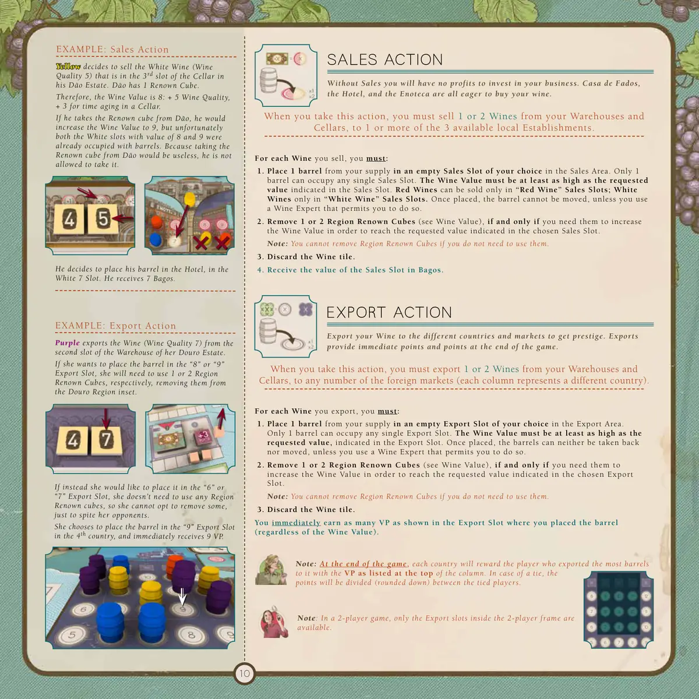
📝 第 10 页 AI 机翻对照（点击展开）
销售行动
没有销售，你就不会有利润来投资你的生意。法多之家(Casa de Fados)、酒店(Hotel)和酒馆(Enoteca)都渴望购买你的葡萄酒。
当你执行此行动时，你必须从你的仓库和酒窖中销售1或2瓶葡萄酒，给3个可用本地酒庄中的1个或多个。
对于每瓶你销售的葡萄酒，你必须：
- 从你的供应中选择一个空的销售槽位，放入1个酒桶。任何单个销售槽位只能放置1个酒桶。葡萄酒价值必须至少达到销售槽位中指示的所需价值。红葡萄酒只能在"红葡萄酒"销售槽位中销售；白葡萄酒只能在"白葡萄酒"销售槽位中销售。一旦放置，酒桶不能被移动，除非你使用允许你这样做的葡萄酒专家。
- 移除1或2个地区声望立方体(参见葡萄酒价值)，且仅当你需要它们来提高葡萄酒价值以达到所选销售槽位中指示的所需价值时。
注意：如果你不需要使用地区声望立方体，则不能移除它们。
- 弃置葡萄酒板块。
- 获得销售槽位价值的巴戈斯(Bagos)。
出口行动
将你的葡萄酒出口到不同国家和市场以获得声望。出口提供即时分数和游戏结束时的分数。
当你执行此行动时，你必须从你的仓库和酒窖中出口1或2瓶葡萄酒，到任意数量的外国市场(每列代表不同的国家)。
对于每瓶你出口的葡萄酒，你必须：
- 从你的供应中选择一个空的出口槽位，放入1个酒桶。任何单个出口槽位只能放置1个酒桶。葡萄酒价值必须至少达到出口槽位中指示的所需价值。一旦放置，酒桶既不能被取回也不能被移动，除非你使用允许你这样做的葡萄酒专家。
- 移除1或2个地区声望立方体(参见葡萄酒价值)，且仅当你需要它们来提高葡萄酒价值以达到所选出口槽位中指示的所需价值时。
注意：如果你不需要使用地区声望立方体，则不能移除它们。
- 弃置葡萄酒板块。
你立即获得放置酒桶的出口槽位上显示的VP数量(无论葡萄酒价值如何)。
注意：游戏结束时，每个国家将奖励向其出口最多酒桶的玩家，奖励VP为列顶列出的数值。如果平局，分数将在平局玩家之间平分(向下取整)。
注意：在2人游戏中，只有2人框架内的出口槽位可用。
示例：销售行动
黄(Yellow)决定销售其杜欧(Dão)庄园酒窖第3个槽位中的白葡萄酒(葡萄酒品质5)。杜欧有1个声望立方体。因此，葡萄酒价值为8：+5葡萄酒品质，+3酒窖陈年时间。
如果他拿走来自Dão的声望立方体，他将把葡萄酒价值提升到9，但不幸的是，值为8和9的两个白色槽位已经被酒桶占据了。因为拿走来自Dão的声望立方体将毫无用处，所以他不被允许拿走它。
他决定将他的酒桶放在酒店的白色7槽位中。他收到7个Bagos。
示例：出口行动
紫色将其Douro庄园仓库第二个槽位的葡萄酒（葡萄酒品质7）出口。如果她想将酒桶放置在"8"或"9"出口槽位，她将需要分别使用1个或2个地区声望立方体，并将它们从Douro地区插图上移除。
如果她想要将其放置在"6"或"7"出口槽位，她不需要使用任何地区声望立方体，因此她不能选择移除一些，只是为了刁难她的对手。
她选择将酒桶放在第4个国家的"9"出口槽位，并立即获得9 VP。
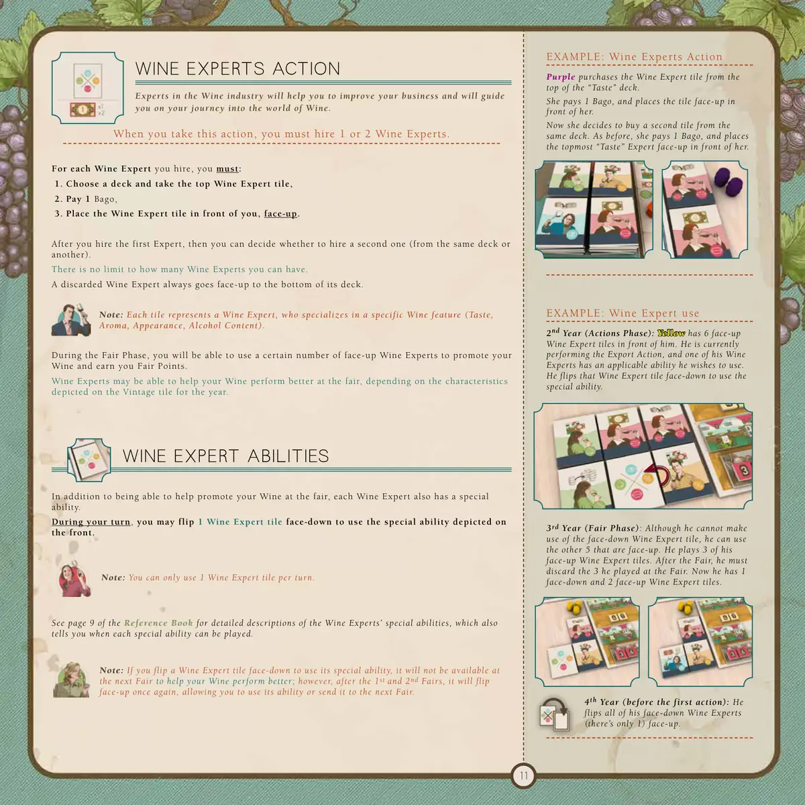
📝 第 11 页 AI 机翻对照（点击展开）
示例：葡萄酒专家行动
紫色玩家从"品味"牌库的顶部购买葡萄酒专家板块。
她支付1个Bago，并将该板块正面朝上放置在她面前。
现在她决定从同一牌库购买第二个板块。和之前一样，她支付1个Bago，并将最顶端的"品味"专家板块正面朝上放置在她面前。
示例：葡萄酒专家使用
第2年（行动阶段）：黄色玩家面前有6个正面朝上的葡萄酒专家板块。他当前正在执行出口行动，并且他的一名葡萄酒专家有一个他想要使用的适用能力。
他将该葡萄酒专家板块翻转为背面朝上以使用特殊能力。
第3年（集市阶段）：虽然他无法使用背面朝上的葡萄酒专家板块，但他可以使用其他5个正面朝上的板块。他使用了3个正面朝上的葡萄酒专家板块。集市后，他必须丢弃在集市上使用的3个板块。现在他有1个背面朝上和2个正面朝上的葡萄酒专家板块。
第4年（在第一个行动之前）：他将所有背面朝上的葡萄酒专家（只有1个）翻转为正面朝上。
葡萄酒专家行动
葡萄酒行业的专家将帮助您改善业务，并引导您进入葡萄酒的世界。
当您执行此行动时，您必须雇佣1或2名葡萄酒专家。
对于您雇佣的每名葡萄酒专家，您必须：
1. 选择一个牌库并获取顶部的葡萄酒专家板块，
- 支付1个Bago，
- 将葡萄酒专家板块正面朝上放置在您面前。
在您雇佣第一位专家后，您可以决定是否雇佣第二位（来自同一牌库或其他牌库）。
您拥有的葡萄酒专家数量没有限制。
被丢弃的葡萄酒专家总是正面朝上地放回其牌库底部。
注意：每个板块代表一名葡萄酒专家，专门从事特定的葡萄酒特性（品味、香气、外观、酒精含量）。
在集市阶段，您将能够使用一定数量的正面朝上的葡萄酒专家来推广您的葡萄酒并赚取集市积分。
根据当年年份板块上描绘的特性，葡萄酒专家可能能够帮助您的葡萄酒在集市上表现更好。
葡萄酒专家能力
除了能够在集市上帮助推广您的葡萄酒外，每名葡萄酒专家还具有特殊能力。
在您的回合中，您可以翻转1个葡萄酒专家板块为背面朝上，以使用其正面描绘的特殊能力。
注意：每回合您只能使用1个葡萄酒专家板块。
有关葡萄酒专家特殊能力的详细描述，请参阅参考手册第9页，该页面还告诉您每个特殊能力的使用时机。
注意：如果您将葡萄酒专家板块翻转为背面朝上以使用其特殊能力，它将不会在下一个集市上帮助您的葡萄酒表现更好；然而，在第1次和第2次集市后，它将再次翻转为正面朝上，允许您使用其能力或将其发送到下一个集市。
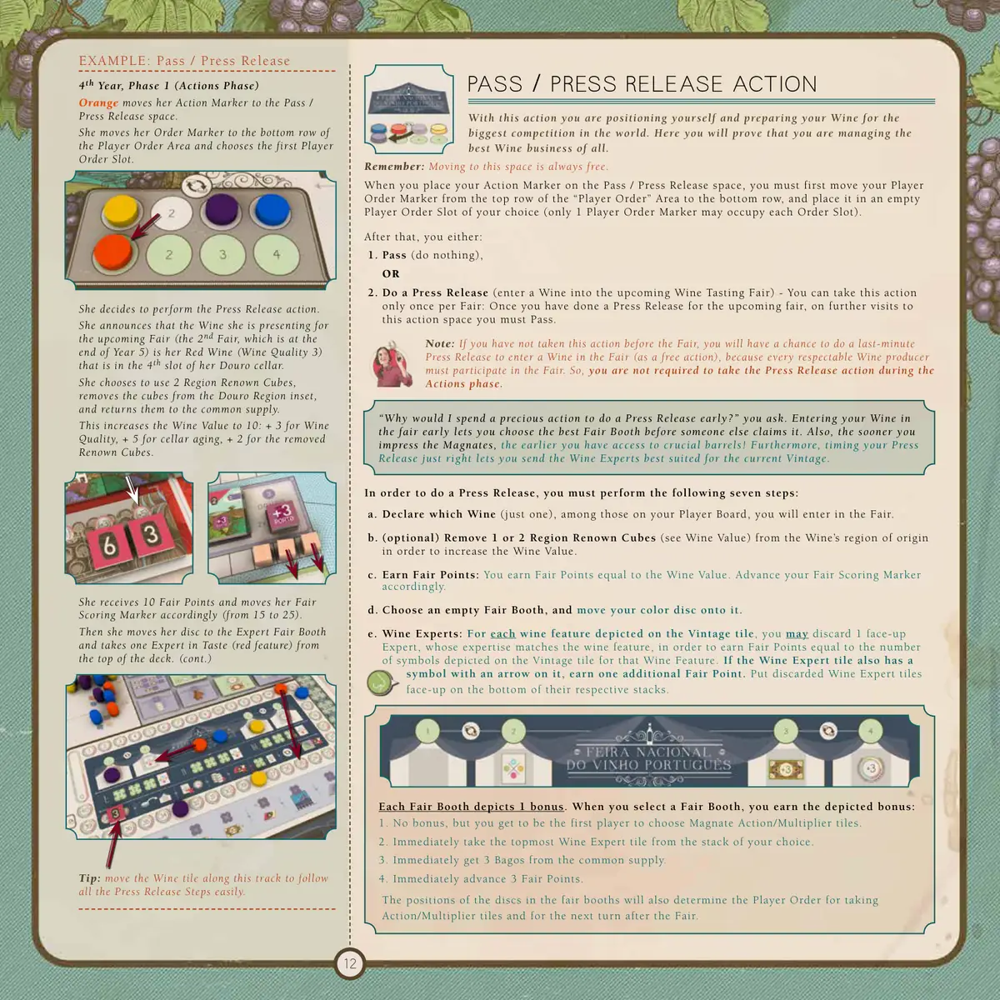
📝 第 12 页 AI 机翻对照（点击展开）
弃牌/新闻发布会 行动
通过此行动，你正在为自己定位并准备你的葡萄酒，参加世界上最大的比赛。在这里，你将证明你正在经营着最好的葡萄酒生意。
记住：移动到此空间总是免费的。
当你将行动指示物放置在弃牌/新闻发布会空间时，你必须先将你的玩家顺序指示物从"玩家顺序"区域的顶行移动到底行，并将其放置在你选择的任意一个空的玩家顺序槽中（每个顺序槽只能有1个玩家顺序指示物）。
之后，你可以选择：
- 弃牌（什么都不做），
或者
- 进行新闻发布会（将一款葡萄酒送入即将到来的品酒会）- 你每届品酒会只能执行此行动一次：一旦你为即将到来的品酒会进行了新闻发布会，之后再次访问此行动空间时你必须弃牌。
注意：如果在品酒会前你没有执行此行动，你将有机会进行最后一刻的新闻发布会来将葡萄酒送入品酒会（作为免费行动），因为每个受人尊敬的葡萄酒生产商都必须参与品酒会。因此，你并非必须在行动阶段执行新闻发布会行动。
"我为什么要花费一个宝贵的行动来提前进行新闻发布会？"你可能会问。提前将你的葡萄酒送入品酒会可以让你在别人占据之前选择最好的品酒会展位。此外，越早让大亨们印象深刻，你就能越早获得关键的酒桶！此外，恰当时机地安排新闻发布会可以让你派遣最适合当前年份的葡萄酒专家。
要进行新闻发布会，你必须执行以下七个步骤：
a. 宣布你将把哪一款葡萄酒（仅一款）送入品酒会，该葡萄酒位于你的玩家版图上。
b. （可选）从葡萄酒原产地的地区声望方块中移除1或2个（参见葡萄酒价值），以提高葡萄酒价值。
c. 获得品酒会分数：你获得的品酒会分数等于葡萄酒价值。相应地推进你的品酒会计分指示物。
d. 选择一个空的品酒会展位，并将你的颜色圆盘移到上面。
e. 葡萄酒专家：对于年份板块上描绘的每个葡萄酒特征，你可以弃置1张面朝上的专家卡，其专业领域与葡萄酒特征相匹配，以获得等于该葡萄酒特征在年份板块上描绘的符号数量的品酒会分数。如果葡萄酒专家板块上也有带箭头的符号，则额外获得1个品酒会分数。将弃置的葡萄酒专家板块面朝上放在各自牌堆的底部。
每个品酒会展位都描绘了1个奖励。当你选择一个品酒会展位时，你将获得所描绘的奖励：
- 无奖励，但你将成为第一个选择大亨行动/乘法板块的玩家。
- 立即从你选择的牌堆中获取最顶层的葡萄酒专家板块。
- 立即从公共供应中获得3个Bagos。
立即前进3个公平点。
展位上圆盘的位置也将决定玩家在获取行动/乘法板块以及集市之后的下一个回合的行动顺序。
示例：通行证 / 新闻稿
第4年，第1阶段（行动阶段）
橙色玩家将其行动标记移动到通行证 / 新闻稿区域。
她将其顺序标记移动到玩家顺序区域的底部行，并选择第一个玩家顺序槽位。
她决定执行新闻稿行动。
她宣布她为即将到来的集市（第2个集市，位于第5年末）展示的是她的红葡萄酒（葡萄酒品质3），该酒位于她的杜罗酒窖的第4个槽位。
她选择使用2个地区声望立方体，从杜罗地区插图上移除这些立方体，并将它们归还到公共供应区。
这使葡萄酒价值增加到10：+3来自葡萄酒品质，+5来自酒窖陈酿，+2来自移除的声望立方体。
她获得10个公平点，并相应地移动其公平记分标记（从15到25）。
然后她将其圆盘移动到专家展位，并从牌库顶部拿取一个专家品味（红色特性）板块。（续）
提示：沿着这个轨道移动葡萄酒板块，以便轻松遵循所有新闻稿步骤。
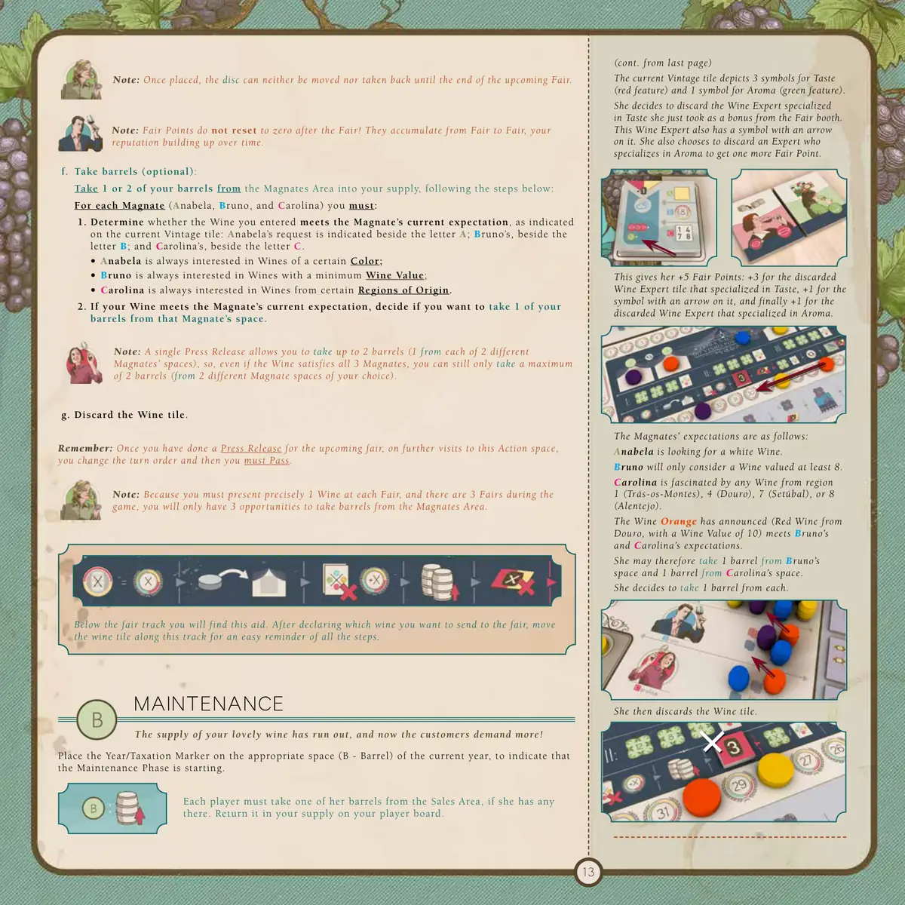
📝 第 13 页 AI 机翻对照（点击展开）
注意：一旦放置，圆盘既不能移动也不能取回，直到即将到来的集市结束。
注意：集市分数不会在集市后归零！它们会从一个集市累积到下一个集市，你的声誉随时间累积。
f. 取桶（可选）：
按照以下步骤，从大亨区域取1或2个你的桶到你的供应区：
对于每个大亨（阿内拉、布鲁诺和卡罗莱纳），你必须：
- 根据当前年份板块上的指示，确定你提交的葡萄酒是否满足大亨的当前期望：阿内拉的请求在字母A旁边标示；布鲁诺的在字母B旁边；卡罗莱纳的在字母C旁边。
• 阿内拉总是对特定颜色的葡萄酒感兴趣；
• 布鲁诺总是对最低葡萄酒价值达到一定要求的葡萄酒感兴趣；
• 卡罗莱纳总是对特定产区的葡萄酒感兴趣。
- 如果你的葡萄酒满足大亨的当前期望，决定是否要从该大亨的空间取1个你的桶。
注意：一次新闻稿允许你最多取2个桶（从2个不同的大亨空间各取1个），因此，即使葡萄酒满足了所有3个大亨，你仍然最多只能取2个桶（从你选择的2个不同的大亨空间）。
g. 弃置年份板块。
记住：一旦你为即将到来的集市做了新闻稿，在之后访问此行动空间时，你要改变回合顺序，然后必须跳过。
注意：因为每个集市你必须恰好提交1种葡萄酒，而游戏中有3个集市，你只有3次机会从大亨区域取桶。
在集市轨道下方你会找到这个辅助工具。在宣布你想送往集市的葡萄酒后，沿着这个轨道移动年份板块，以便轻松记住所有步骤。
维护
你可爱的葡萄酒供应已经用完，现在顾客需要更多！
将年份/税收标记放在当前年份的适当位置（B-桶），以表示维护阶段开始。
每个玩家必须从销售区域取一个她的桶（如果那里有的话），并将其放回她玩家板上的供应区。
（接上页）
当前年份板块描绘了3个风味（红色特性）符号和1个香气（绿色特性）符号。
她决定弃置她刚从集市摊位作为奖励获得的、专攻风味的葡萄酒专家。这个葡萄酒专家也有一个带箭头的符号。她也选择弃置一个专攻香气的专家，以获得一个额外的集市分数。
这给了她+5个集市分数：+3给弃置的专攻风味的葡萄酒专家板块，+1给带箭头的符号，最后+1给弃置的专攻香气的葡萄酒专家。
大亨的期望如下：
Anabela 正在寻找一款白葡萄酒。
Bruno 只会考虑价值至少为 8 的葡萄酒。
Carolina 对来自地区 1 (Trás-os-Montes)、4 (Douro)、7 (Setúbal) 或 8 (Alentejo) 的任何葡萄酒都着迷。
这款名为 Orange 的葡萄酒（来自 Douro 的红葡萄酒，葡萄酒价值为 10）符合 Bruno 和 Carolina 的期望。
因此，她可以从 Bruno 的区域拿 1 桶酒，并从 Carolina 的区域拿 1 桶酒。
她决定从每个区域各拿 1 桶。
然后她弃置了这块葡萄酒板块。
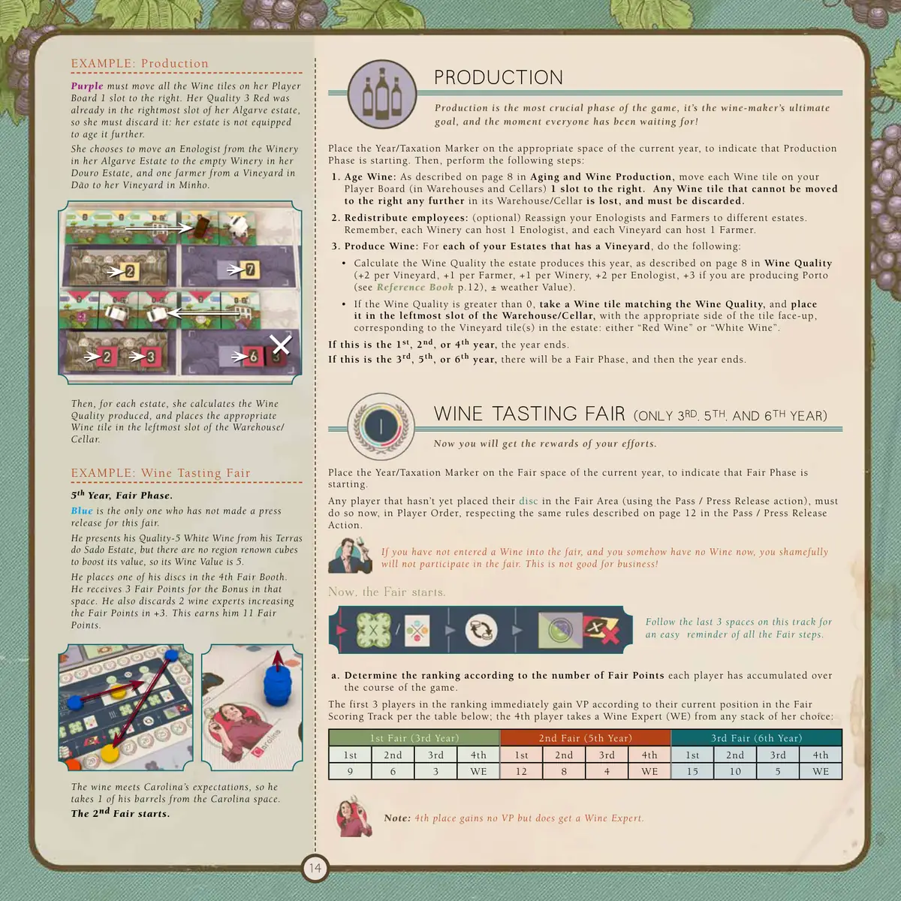
📝 第 14 页 AI 机翻对照（点击展开）
生产
生产是游戏中最关键的阶段，它是酿酒师的终极目标，也是所有人一直期待的时刻！
将年份/税务标记放在当前年份的相应区域上，以表示生产阶段开始。然后执行以下步骤：
- 陈酿葡萄酒：如第8页的陈酿与葡萄酒生产中所述，将你玩家版图上（在仓库和酒窖中）的每个葡萄酒板块向右移动1个槽位。任何无法在其仓库/酒窖中继续向右移动的葡萄酒板块将丢失，必须被弃置。
- 重新分配员工：（可选）将你的品酒师和农民重新分配到不同的庄园。记住，每个酒庄可以容纳1名品酒师，每个葡萄园可以容纳1名农民。
- 生产葡萄酒：对于每个拥有葡萄园的庄园，执行以下操作：
• 计算该庄园今年生产的葡萄酒品质，如第8页的葡萄酒品质所述（每个葡萄园+2，每个农民+1，每个酒庄+1，每个品酒师+2，如果你生产波特酒（见参考手册第12页）则+3，±天气值）。
• 如果葡萄酒品质大于0，取一张匹配该葡萄酒品质的葡萄酒板块，并将其放在仓库/酒窖的最左侧槽位，板块的相应面朝上，对应庄园中的葡萄园板块："红葡萄酒"或"白葡萄酒"。
如果是第1、2或4年，则年结束。
如果是第3、5或6年，将会有集市阶段，然后年结束。
葡萄酒品鉴集市（仅在第3、5和6年）
现在你将获得努力的回报。
将年份/税务标记放在当前年份的集市区域上，以表示集市阶段开始。
任何尚未将他们的圆盘放在集市区域（使用通过/新闻稿行动）的玩家，现在必须按玩家顺序这样做，遵守第12页通过/新闻稿行动中描述的相同规则。
如果你没有葡萄酒进入集市，而你现在又没有任何葡萄酒，你将可耻地不参加集市。这对生意不好！
现在，集市开始。
沿着这条轨道的最后3个空间，可以轻松提醒所有集市步骤。
a. 根据每个玩家在游戏过程中积累的集市点数确定排名。
排名前3的玩家立即根据他们在当前集市计分轨道上的位置，按照下表获得VP；第4名玩家可以从她选择的任何一堆中拿取一名葡萄酒专家（WE）：
第1次集市（第3年）
第2次集市（第5年）
第3次集市（第6年）
第1名
第2名
第3名
第4名
第1名
第2名
第3名
第4名
第1名
第2名
第3名
第4名
WE
WE
WE
注意：第4名没有获得VP但会获得一名葡萄酒专家。
示例：生产
紫色必须移动她玩家版图上所有的葡萄酒板块
将板块1向右移动一格。她的品质3级红葡萄酒已经位于她阿尔加维庄园的最右侧插槽，因此她必须弃掉它：她的庄园无法进一步陈化它。
她选择将一名酿酒师从她在阿尔加维庄园的酒庄移至她在杜罗庄园的空酒庄，并将一名农民从道产区的一个葡萄园移至她在米尼奥的葡萄园。
然后，她为每个庄园计算生产的葡萄酒品质，并将相应的葡萄酒板块放置在仓库/酒窖的最左侧插槽。
示例：葡萄酒品鉴会
第5年，品鉴会阶段。
蓝色是唯一一个没有为此次品鉴会发布新闻稿的玩家。
他展示了他来自特拉斯杜萨多庄园的品质5级白葡萄酒，但没有地区声望立方体来提升其价值，因此其葡萄酒价值为5。
他将一个自己的圆盘放在第4个展位。
他获得该空间中奖励的3个品鉴会积分。他还弃掉2名葡萄酒专家，使品鉴会积分增加3。这为他赢得了11个品鉴会积分。
葡萄酒达到了卡罗琳娜的期望，所以他取走1个自己在卡罗琳娜空间的酒桶。
第2个品鉴会开始。
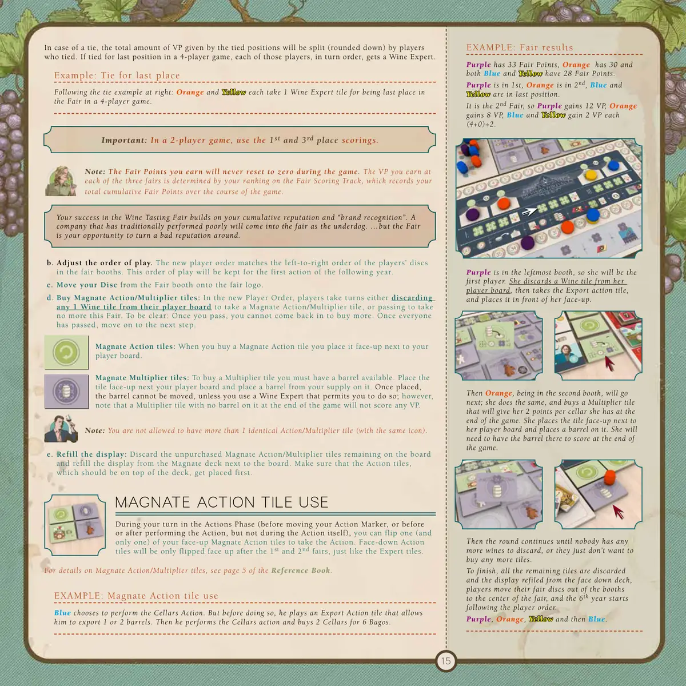
📝 第 15 页 AI 机翻对照（点击展开）
示例：公平结果
紫色有33个公平点，橙色有30个，蓝色和黄色各有28个公平点。
紫色排名第一，橙色排名第二，蓝色和黄色排名最后。
这是第二次公平，因此紫色获得12个VP，橙色获得8个VP，蓝色和黄色各获得2个VP（4+0）÷2。
紫色在最左边的展位，因此她将成为第一玩家。她从自己的玩家板上丢弃一个酒板块，然后拿取出口行动板块，并将其正面朝上放在自己面前。
接着是橙色，她在第二个展位，接下来行动；她做同样的事情，并购买一个乘数板块，该板块将在游戏结束时给她每个酒窖2分。她将板块正面朝上放在自己玩家板旁边，并在上面放置一个桶。她需要在游戏结束时将桶放在那里以计分。
然后轮次继续，直到没有人再有酒可丢弃，或者他们只是不想再购买任何板块。
最后，所有剩余的板块被丢弃，展示区从牌库背面重新填充，玩家将他们的公平圆盘从展位移到集市中央，然后按照玩家顺序开始第6年。
紫色、橙色、黄色，然后是蓝色。
如果出现平局，平局玩家将平分（向下取整）平局位置提供的VP总数。如果在4人游戏中平局最后，这些玩家将按顺序各获得一个酒专家板块。
示例：平局最后
按照右侧的平局示例：在4人游戏中，橙色和黄色因在集市中排名最后，各获得1个酒专家板块。
重要提示：在2人游戏中，使用第一和第三名的计分。
注意：你在游戏中获得的公平点永远不会重置为零。你在三次集市中获得的VP由你在集市计分轨道上的排名决定，该轨道记录了你在游戏过程中累积的总公平点数。
你在品酒集市上的成功建立在你的累积声誉和"品牌认知度"之上。传统上表现不佳的公司将以弱者的身份进入集市……但集市是你扭转坏声誉的机会。
b. 调整行动顺序。新的玩家顺序与玩家圆盘在集市展位中的从左到右顺序相匹配。这个行动顺序将在下一年度的第一个行动中保持不变。
c. 将你的圆盘从集市展位移动到集市标志上。
d. 购买巨头行动/乘数板块：按照新的玩家顺序，玩家轮流从自己的玩家板上丢弃任意1个酒板块以获取一个巨头行动/乘数板块，或者跳过以在本集市中不再购买。明确说明：一旦你跳过，就不能再回来购买更多。一旦所有人都跳过，进入下一步骤。
大亨行动板块：当你购买一块大亨行动板块时，你将其面朝上放置在你的玩家版图旁边。
大亨倍数板块：要购买倍数板块，你必须有一个可用的桶。将板块面朝上放置在你的玩家版图旁边，并从你的供应中放置一个桶在板块上。一旦放置，桶就不能移动，除非你使用允许你这样做的葡萄酒专家；然而，请注意，在游戏结束时，上面没有桶的倍数板块不会获得任何VP。
注意：你不允许拥有超过1个相同的行动/倍数板块（具有相同图标）。
e. 补充展示区：弃置版图上未售出的大亨行动/倍数板块，并从版图旁边的大亨牌库中补充展示区。确保应该位于牌库顶部的行动板块被首先放置。
大亨行动板块使用
在你的回合的行动阶段（在移动你的行动标记之前，或在执行行动之前或之后，但不能在行动执行期间），你可以翻转一块（且仅一块）你面朝上的大亨行动板块来执行行动。面朝下的行动板块将在第一次和第二次集市之后才会被翻转为面朝上，就像专家板块一样。
关于大亨行动/倍数板块的详细信息，请参阅参考手册第5页。
示例：大亨行动板块使用
蓝色玩家选择执行地窖行动。但在执行之前，他打出了一块出口行动板块，允许他出口1或2个桶。然后他执行地窖行动，花费6个Bagos购买了2个地窖。
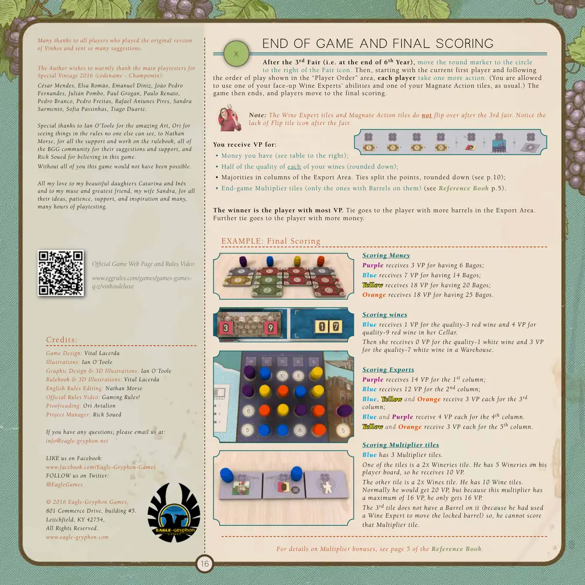
📝 第 16 页 AI 机翻对照（点击展开）
游戏结束与最终计分
在第3次集市之后（即第6年结束时），将回合标记移至集市图标右侧的圆圈中。然后，从当前起始玩家开始，按照"玩家顺序"区域所示的顺序，每位玩家再执行一个行动。（你可以像往常一样使用一张你正面朝上的葡萄酒专家能力牌和一张你的巨头行动板块。）游戏随即结束，玩家进入最终计分阶段。
注意：在第3次集市后，葡萄酒专家板块和巨头行动板块不会翻转。请注意集市后没有翻转板块图标。
你可以获得以下VP：
• 你拥有的金钱（见右侧表格）；
• 你每种葡萄酒质量的一半（向下取整）；
• 出口区域各列中的多数优势。平局时平分分数，向下取整（见第10页）；
• 游戏结束倍数板块（仅限带有酒桶的板块）（见参考手册第5页）。
VP最多的玩家获胜。若平局，则出口区域中酒桶更多的玩家获胜。若仍平局，则金钱更多的玩家获胜。
示例：最终计分
计分金钱
紫色玩家拥有6个Bagos，获得3 VP；
蓝色玩家拥有14个Bagos，获得7 VP；
黄色玩家拥有20个Bagos，获得18 VP；
橙色玩家拥有25个Bagos，获得18 VP。
计分葡萄酒
蓝色玩家在她的酒窖中有一瓶质量为3的红葡萄酒，获得1 VP；一瓶质量为9的红葡萄酒，获得4 VP。
然后她在仓库中有一瓶质量为1的白葡萄酒，获得0 VP；一瓶质量为7的白葡萄酒，获得3 VP。
计分出口
紫色玩家获得第1列的14 VP；
蓝色玩家获得第2列的12 VP；
蓝色、黄色和橙色玩家各获得第3列的3 VP；
蓝色和紫色玩家各获得第4列的4 VP。
黄色和橙色玩家各获得第5列的3 VP。
计分倍数板块
蓝色玩家有3张倍数板块。
其中一张是2X酒庄板块。他的玩家版图上有5个酒庄，因此他获得10 VP。
另一张是2X葡萄酒板块。他有10张葡萄酒板块。
通常他会获得20 VP，但由于这个倍数板块有16 VP的上限，他只获得16 VP。
第3张板块没有酒桶（因为他使用了一位葡萄酒专家移动了被锁定的酒桶），因此他无法计这张倍数板块。
关于倍数加成的详细信息，请参见参考手册第5页。
非常感谢所有玩了《Vinhos》原版并提出许多建议的玩家。
作者谨向特别版2016年（代号 - Champomix）的主要测试者表示诚挚感谢：
César Mendes, Elsa Romão, Emanuel Diniz, João Pedro Fernandes, Julián Pombo, Paul Grogan, Paulo Renato, Pedro Branco, Pedro Freitas, Rafael Antunes Pires, Sandra Sarmento, Sofia Passinhas, Tiago Duarte.
特别感谢Ian O'Toole的精美艺术，Ori为
看到规则中别人看不到的东西，献给 Nathan Morse，感谢他对规则书的全部支持和辛勤工作，感谢 BGG 社区的所有建议和支持，感谢 Rick Soued 对这款游戏的信任。
没有你们所有人，这款游戏就不可能实现。
将我全部的爱献给我美丽的女儿 Catarina 和 Inês，以及我的缪灵和最好的朋友——我的妻子 Sandra，感谢她们的所有想法、耐心、支持和灵感，以及许许多多的测试游戏时间。
官方游戏网页和规则视频
www.eggrules.com/games/games-games-
q-z/vinhosdeluxe
致谢：
游戏设计：Vital Lacerda
插画：Ian O´Toole
平面设计与 3D 插画：Ian O´Toole
规则书与 3D 插画：Vital Lacerda
英文规则编辑：Nathan Morse
官方规则视频：Gaming Rules!
校对：Ori Avtalion
项目经理：Rick Soued
如有任何问题，请通过以下邮箱联系我们：
info@eagle-gryphon.net
在 Facebook 上 LIKE 我们：
www.facebook.com/Eagle-Gryphon-Games
在 Twitter 上 FOLLOW 我们：
@EagleGames
© 2016 Eagle-Gryphon Games,
801 Commerce Drive, building #5.
Leitchfield, KY 42754,
保留所有权利。
www.eagle-gryphon.com